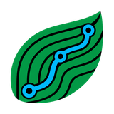
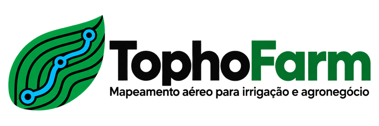

Nenhum projeto aberto
Toque para abrir um arquivo .kmz/.kml
🔍
Camadas
0
📂
📏
📍
🚘
Camadas
×
Mostrar todas
Ocultar todas
Padrão
Abra um projeto para ver as camadas.
Meus projetos
×
📂 Abrir arquivo .kmz / .kml
Nenhum projeto salvo neste aparelho ainda.

Visualizador IrriCAD
Ver histórico de versões
Desenvolvido por
João Paulo de Oliveira
Engenheiro Agrônomo · Especialista em Irrigação
bolsairriga.com.br
Solte o arquivo .kmz ou .kml aqui
Processando arquivo...